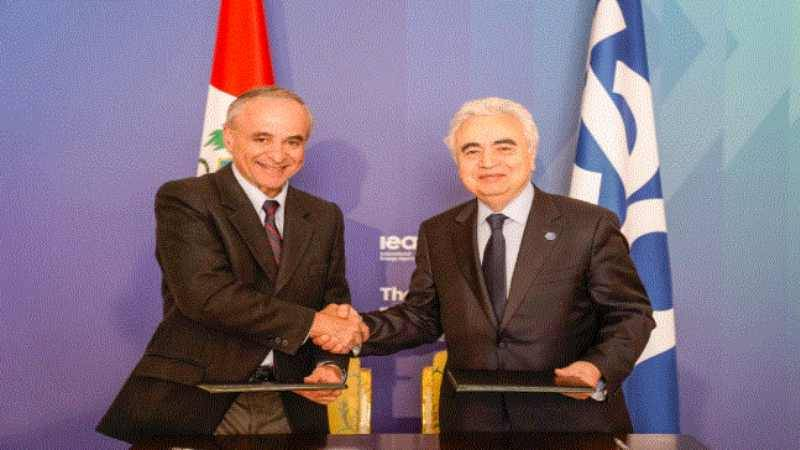
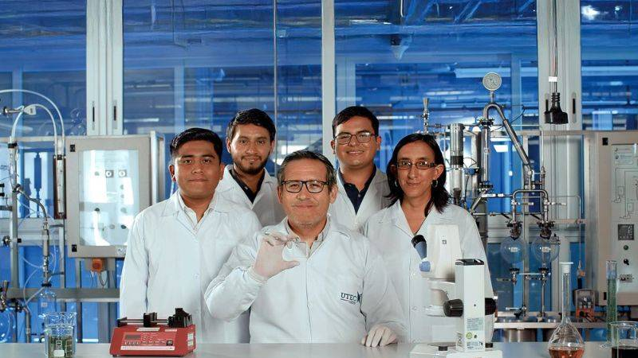

Minem firma Memorando de Entendimiento con la Agencia Internacional de la Energía
Este acuerdo, suscrito por el ministro Jorge Montero Cornejo y el director ejecutivo de la AIE, Fatih Birol,
en el marco de la “Cumbre Sobre el Futuro de la Seguridad Energética”, se realiza en Londres.

El Ministerio de Energía y Minas (Minen) suscribió un Memorando de Entendimiento con la Agencia Internacional
de la Energía (AIE), que tiene por objetivo establecer un marco general de cooperación en áreas de interés
mutuo como política energética, planificación, eficiencia energética, energías renovables, hidrógeno verde
y minerales críticos.
Este acuerdo, suscrito por el ministro Jorge Montero Cornejo y el director ejecutivo de la AIE, Fatih Birol,
en el marco de la Cumbre Sobre el Futuro de la Seguridad Energética, que se realiza en Londres, permitirá
desarrollar proyectos o programas conjuntos que contribuyan a una transición energética sostenible, con
beneficios sociales, económicos y ambientales.
El acuerdo establece las siguientes áreas de cooperación: estadísticas energéticas, recopilación de datos y
modelización; análisis de políticas energéticas; eficiencia energética, energías renovables: solar, eólica,
hidroeléctrica, geotermia, bioenergía.
Adicionalmente, aborda la colaboración en minerales críticos incluido el refinado y procesamiento; así como el hidrógeno verde.
Asimismo, el Memorando de Entendimiento establece que las modalidades de cooperación previstas son: proyectos
o programas conjuntos, estudios técnicos y recomendaciones de políticas, participación en eventos regionales
e internacionales, formación y desarrollo de capacidades, intercambio de datos y proyecciones, organización
de actividades como seminarios, talleres, entre otras.
¿QUÉ SIGNIFICA AIE Y CUÁL ES SU FUNCIÓN?
La AIE es una organización intergubernamental autónoma, establecida en 1974 dentro del marco de la Organización
para la Cooperación y el Desarrollo Económicos (OCDE), y su objetivo es proveer análisis técnicos, datos
estadísticos, y recomendaciones de política energética para apoyar a los países en la provisión de energía
segura y sostenible.
El Memorando de Entendimiento establece un periodo de vigencia de 3 años y podrá renovarse por un periodo igual
si existe voluntad de ambas partes; no implica compromisos financieros vinculantes, siendo las actividades
sujetas a la disponibilidad de recursos de cada entidad firmante del acuerdo.
Noticia relevante
Científicos peruanos desarrollan chip capaz de reemplazar tomografías y detectar células cancerígenas
Con solo una muestra de sangre y nanopartículas magnéticas, chip peruano ofrece solución accesible para monitorear
el cáncer y salvar miles de vidas en Perú.

Científicos de la Universidad de Ingeniería y Tecnología (UTEC), en colaboración con la prestigiosa Cleveland
Clinic de Estados Unidos, han desarrollado y probado con éxito en el Perú un chip biomédico de bajo costo capaz de
detectar de forma temprana células tumorales cancerígenas y prevenir la metástasis.
El dispositivo, denominado el “Chip de la esperanza”, representa una alternativa accesible frente a las costosas
tomografías, ya que cada prueba requeriría una inversión máxima de 10 soles. Su diseño permite ser utilizado
en zonas de difícil acceso, donde los exámenes médicos avanzados son prácticamente inexistentes.
La innovación ha sido elaborada por investigadores y estudiantes de la UTEC y tiene el potencial de transformar
el monitoreo del cáncer en el país. Su principal ventaja radica en la detección temprana del aumento de células
tumorales circulantes (CTC), lo que facilita una intervención médica oportuna antes de que el cáncer avance a
estadios más complejos.
“El chip solo necesita una muestra de sangre diluida, a la que se le agregan nanopartículas magnéticas que se adhieren
a las CTC. Estas permiten identificar y cuantificar las células al pasar por un campo magnético”, explicó Julio
Valdivia, director del Centro de Investigación en Bioingeniería de la UTEC y líder del proyecto.
Aunque el dispositivo no diagnostica la enfermedad, puede ser clave para orientar decisiones clínicas en las primeras
fases. El impacto potencial es significativo: en Perú, cerca de 70 000 personas son diagnosticadas con cáncer cada
año, muchas de ellas con escaso acceso a diagnósticos oportunos debido a limitaciones económicas y geográficas.
La propuesta tecnológica apunta a cerrar esa brecha con una herramienta práctica, económica y de rápida implementación,
que podría incorporarse a futuras políticas de salud pública en el país.
¿QUÉ FALTA PARA QUE LOS PERUANOS ACCEDAN AL DISPOSITIVO?
El “Chip de la esperanza” ya ha sido probado en muestras de pacientes con cáncer de mama, obteniendo resultados prometedores.
Las pruebas preliminares han demostrado que el dispositivo es altamente sensible (cercano al 100 %), contando con una
especificidad del 90-93%. Y no solo ello. Incluso, el diagnóstico puede ser realizado por personal en proceso de
aprendizaje médico, lo que facilita su implementación en comunidades remotas.